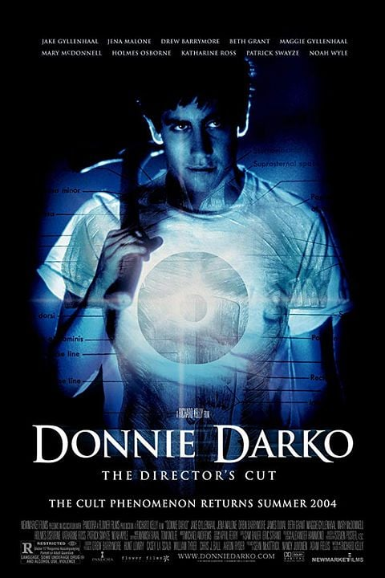

DONNIE DARKO

SINOPSE
- Donnie Darko é um adolescente perturbado que começa a ter visões de um homem fantasiado de coelho, que o leva a cometer uma série de atos estranhos. À medida que sua vida desmorona, ele começa a questionar a realidade e o destino.